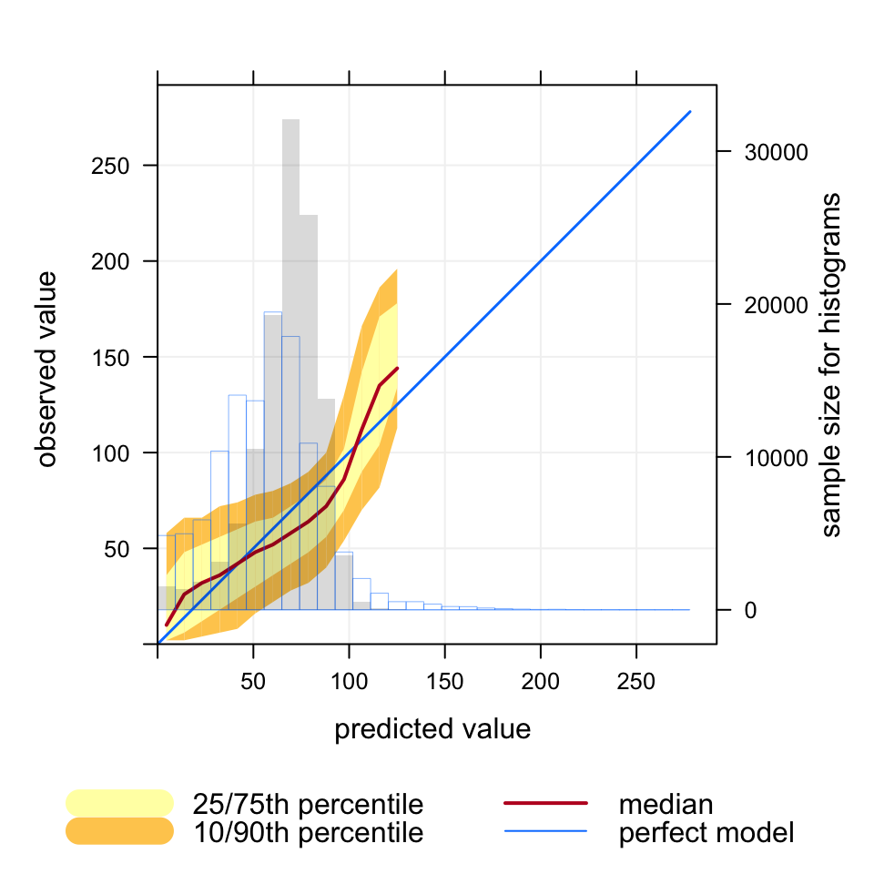
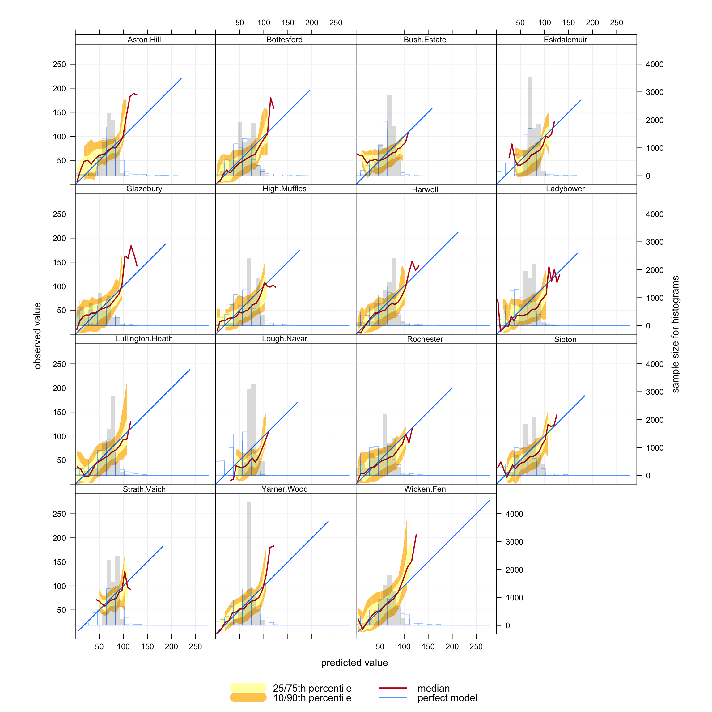
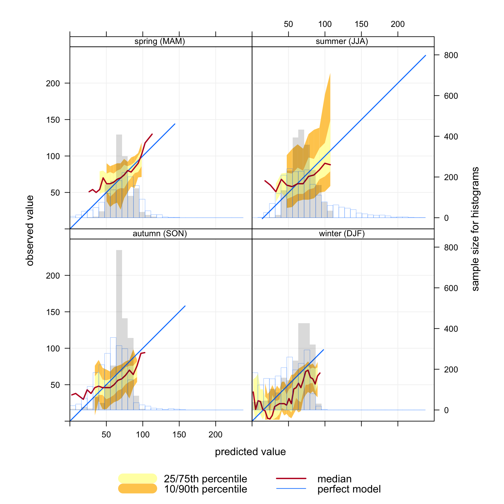
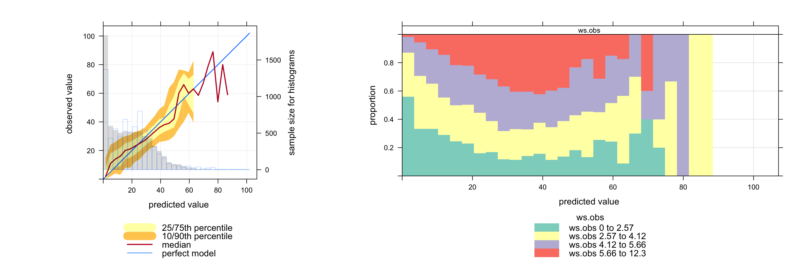
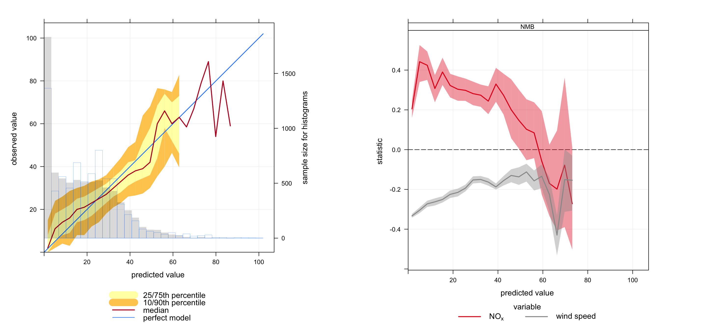

site date o3 rollingO3Meas mod rollingO3Mod group
1 Aston.Hill 2006-01-01 00:00:00 NA NA 92.80 NA CMAQ.KCL
2 Aston.Hill 2006-01-01 01:00:00 74 NA 92.18 NA CMAQ.KCL
3 Aston.Hill 2006-01-01 02:00:00 72 NA 92.14 NA CMAQ.KCL
4 Aston.Hill 2006-01-01 03:00:00 72 NA 91.72 NA CMAQ.KCL
5 Aston.Hill 2006-01-01 04:00:00 70 NA 91.50 NA CMAQ.KCL
6 Aston.Hill 2006-01-01 05:00:00 66 NA 92.28 NA CMAQ.KCL20 Conditional quantiles
20.1 Background
Conditional quantiles are a very useful way of considering model performance against observations for continuous measurements (Wilks 2005). The conditional quantile plot splits the data into evenly spaced bins. For each predicted value bin e.g. from 0 to 10 ppb the corresponding values of the observations are identified and the median, 25/75th and 10/90 percentile (quantile) calculated for that bin. The data are plotted to show how these values vary across all bins. For a time series of observations and predictions that agree precisely the median value of the predictions will equal that for the observations for each bin.
Wilks, Daniel S. 2005. Statistical Methods in the Atmospheric Sciences, Volume 91, Second Edition (International Geophysics). 2nd ed. Hardcover; Academic Press.
The conditional quantile plot differs from the quantile-quantile plot (Q-Q plot) that is often used to compare observations and predictions. A Q-Q~plot separately considers the distributions of observations and predictions, whereas the conditional quantile uses the corresponding observations for a particular interval in the predictions. Take as an example two time series, the first a series of real observations and the second a lagged time series of the same observations representing the predictions. These two time series will have identical (or very nearly identical) distributions (e.g. same median, minimum and maximum). A Q-Q plot would show a straight line showing perfect agreement, whereas the conditional quantile will not. This is because in any interval of the predictions the corresponding observations now have different values.
Plotting the data in this way shows how well predictions agree with observations and can help reveal many useful characteristics of how well model predictions agree with observations — across the full distribution of values. A single plot can therefore convey a considerable amount of information concerning model performance. The basic function is considerably enhanced by allowing flexible conditioning easily e.g. to evaluate model performance by season, day of the week and so on, as in other openair functions.
To make things more interesting we will use data from a model evaluation exercise organised by Defra in 2010/2011. Many models were evaluated but we only consider hourly ozone predictions from the CMAQ model being used at King’s College London.
First the data are loaded:
The data consists of hourly observations of O3 in μg m-3 at 15 rural O3 sites in the UK together with predicted values.1 First, we consider O3 predictions across all sites to help illustrate the purpose of the function. The results are shown in Figure 20.1. An explanation of the Figure is given in its caption.
We firs consider an example of the use of conditional quantiles applied to the KCL CMAQ model for 15 rural O3 monitoring sites in 2006, for hourly data. The blue line shows the results for a perfect model. In this case the observations cover a range from 0 to 270 μg m-3. The red line shows the median values of the predictions and corresponding observations. The maximum predicted value is 125 μg m-3, somewhat less than the maximum observed value. The shading shows the predicted quantile intervals i.e. the 25/75th and the 10/90th. A perfect model would lie on the blue line and have a very narrow spread. There is still some spread because even for a perfect model a specific quantile interval will contain a range of values. However, for the number of bins used in this plot the spread will be very narrow. Finally, the histogram shows the counts of predicted values.
library(openair) # load the package
conditionalQuantile(CMAQ.KCL, obs = "o3", mod = "mod")
A more informative analysis can be undertaken by considering conditional quantiles separately by site, which is easily done using the type option. The results are shown in Figure 20.2. It is now easier to see where the model performs best and how it varies by site type. For example, at a remote site in Scotland like Strath Vaich it is clear that the model does not capture either the lowest or highest O3 concentrations very well.
conditionalQuantile(CMAQ.KCL,
obs = "o3",
mod = "mod",
type = "site")
As with other openair functions, the ability to consider conditioning can really help with interpretation. For example, what do the conditional quantiles at Lullington Heath (in south-east England) look like by season? This is easily done by subsetting the data to select that site and setting type = "season", as shown in Figure 20.3. These results show that winter predictions have good coverage i.e. with width of the blue `perfect model’ line is the same as the observations. However, the predictions tend to be somewhat lower than observations for most concentrations (the median line is below the blue line) — and the width of the 10/75th and 10/90th percentiles is quite broad. However, the area where the model is less good is in summer and autumn because the predictions have low coverage (the red line only covers less than half of the observation line and the width of the percentiles is wide).
Of course, it is also easy to plot by hour of the day, day of the week, by daylight/nighttime and so on — easily. All these approaches can help better understand why a model does not perform very well rather than just quantifying its performance. Also, these types of analysis are particularly useful when more than one model is involved in a comparison as in the recent Defra model evaluation exercise, which we will come back to later when some results are published.
conditionalQuantile(subset(CMAQ.KCL, site == "Lullington.Heath"),
obs = "o3",
mod = "mod", type = "season")
20.2 Conditional evaluation
There are numerous ways in which model performance can be assessed, including the use of common statistical measures described in Chapter 18. These approaches are very useful for comparing models against observations and other models. However, model developers would generally like to know why a model may have poor performance under some situations. This is a much more challenging issue to address. However, useful information can be gained by considering how other variables vary simultaneously.
The conditionalEval function provides information on how other variables vary across the same intervals as shown on the conditional quantile plot. There are two types of variable that can be considered by setting the value of statistic. First, statistic can be another variable in the data frame. In this case the plot will show the different proportions of statistic across the range of predictions. For example statistic = "season" will show for each interval of mod the proportion of predictions that were spring, summer, autumn or winter. This is useful because if model performance is worse for example at high concentrations of mod then knowing that these tend to occur during a particular season etc. can be very helpful when trying to understand why a model fails. See Section 25.2 for more details on the types of variable that can be statistic. Another example would be statistic = "ws" (if wind speed were available in the data frame), which would then split wind speed into four quantiles and plot the proportions of each. Again, this would help show whether model performance in predicting concentrations of O3 for example is related to low to high wind speed conditions.
conditionalEval can also simultaneously plot the model performance of other observed/predicted variable pairs according to different model evaluation statistics. These statistics derive from the Chapter 18) function and include MB, NMB, r, COE, MGE, NMGE, RMSE and FAC2. More than one statistic can be supplied e.g. statistic = c("NMB", "COE"). Bootstrap samples are taken from the corresponding values of other variables to be plotted and their statistics with 95% confidence intervals calculated. In this case, the model performance of other variables is shown across the same intervals of mod, rather than just the values of single variables. In this second case the model would need to provide observed/predicted pairs of other variables.
For example, a model may provide predictions of NOx and wind speed (for which there are also observations available). The conditionalEval function will show how well these other variables are predicted for the same prediction intervals of the main variable assessed in the conditional quantile plot e.g. ozone. In this case, values are supplied to var.obs (observed values for other variables) and var.mod (modelled values for other variables). For example, to consider how well the model predicts NOx and wind speed var.obs = c("nox.obs", "ws.obs") and var.mod = c("nox.mod", "ws.mod") would be supplied (assuming nox.obs, nox.mod, ws.obs, ws.mod are present in the data frame). The analysis could show for example, when ozone concentrations are under-predicted, the model may also be shown to over-predict concentrations of NOx at the same time, or under-predict wind speeds. Such information can thus help identify the underlying causes of poor model performance. For example, an under-prediction in wind speed could result in higher surface NOx concentrations and lower ozone concentrations. Similarly if wind speed predictions were good and NOx was over predicted it might suggest an over-estimate of NOx emissions. One or more additional variables can be plotted.
A special case is statistic = "cluster". In this case a data frame is provided that contains the cluster calculated by trajCluster and importTraj. Alternatively users could supply their own pre-calculated clusters. These calculations can be very useful in showing whether certain back trajectory clusters are associated with poor (or good) model performance. Note that in the case of statistic = "cluster" there will be fewer data points used in the analysis compared with the ordinary statistics above because the trajectories are available for every three hours. Also note that statistic = "cluster" cannot be used together with the ordinary model evaluation statistics such as MB. The output will be a bar chart showing the proportion of each interval of mod by cluster number.
Far more insight can be gained into model performance through conditioning using type. For example, type = "season" will plot conditional quantiles and the associated model performance statistics of other variables by each season. type can also be a factor or character field e.g. representing different models used.
As an example, similar data to that described above from CMAQ have been used as an example.
A subset of the data for the North Kensington site can be imported as shown below.
The file contains observed and modelled hourly values for O3, NOx, wind speed, wind direction, temperature and relative humidity.
head(condDat) date O3.obs NOx.obs ws.obs wd.obs temp.obs rh.obs O3.mod
5 2006-01-01 00:00:00 10 29.43665 4.6296 190 4.9 89 14.80
10 2006-01-01 01:00:00 15 17.55393 NA 210 5.1 90 17.46
15 2006-01-01 02:00:00 11 19.64817 2.5720 220 4.9 94 18.31
20 2006-01-01 03:00:00 11 19.15393 3.6008 270 5.7 91 18.25
25 2006-01-01 04:00:00 11 17.03037 3.0864 270 5.0 94 18.08
30 2006-01-01 05:00:00 12 15.98325 3.6008 260 5.8 94 14.87
NOx.mod ws.mod wd.mod temp.mod rh.mod
5 24.00 2.78 224 3.85 93.16
10 19.91 2.63 226 3.85 92.77
15 18.25 2.52 236 2.85 99.40
20 18.33 2.48 253 2.85 99.19
25 18.09 2.24 275 3.85 97.49
30 21.38 2.43 285 4.85 94.41The conditionalEval function can be used straightforwardly to provide information on how predictions depend on another variable in general. In this case the option statistic can refer to another variable in the data frame to see how the quality of predictions depend on values of that variable. For example, in Figure 20.4 it can be seen how wind speed varies across the O3 prediction intervals. At low predicted concentrations of O3 there is a high proportion of low wind speed conditions (0 to 2.57 m s-1). When O3 is predicted to be around 40 ppb the wind speed tends to be higher — and finally at higher predicted concentrations of O3 the wind speed tends to decrease again. The important aspect of plotting data in this way is that it can directly relate the prediction performance to values of other variables, which should help develop a much better idea of the conditions that matter most. The user can therefore develop a good feel for the types of conditions where a model performs well or poorly and this might provide clues as to the underlying reasons for specific model behaviour.
conditionalEval(condDat, obs = "O3.obs", mod = "O3.mod",
statistic = "ws.obs",
col.var = "Set3")
In an extension to Figure 20.4 it is possible to derive information on the simultaneous model performance of other variables. Figure 20.5 shows the conditional quantile plot for hourly O3 predictions. This shows among other things that concentrations of O3 tend to be under-predicted for concentrations less than about 20 ppb. The Figure on the right shows the simultaneous model performance for wind speed and NOx for the same prediction intervals as shown in the conditional quantile plot. The plot on the right shows that for low concentrations of predicted O3 there is a tendency for NOx concentrations to be overestimated (NMB \(\approx\) 0.2 to 0.4) and wind speeds to be underestimated (NMB \(\approx\) -0.2 to -0.3). One possible explanation for this behaviour is that the meteorological model tends to produce wind speeds that are too low, which would result in higher concentrations of NOx, which in turn would result in lower concentrations of O3. Note that it is possible to include more than one statistic, which would be plotted in a new panel e.g. statistic = c("NMB", "r").
In essence the conditionalEval function provides more information on model performance that can help better diagnose potential problems. Clearly, there are many other ways in which the results can be analysed, which will depend on the data available.
conditionalEval(condDat, obs = "O3.obs", mod = "O3.mod",
var.obs = c("NOx.obs", "ws.obs"),
var.mod = c("NOx.mod", "ws.mod"),
statistic = "NMB",
var.names = c("nox", "wind speed"))
A plot using temperature predictions shows that for most of the range in O3 predictions there is very little bias in temperature (although there is some negative bias in temperature for very low concentration O3 predictions):
conditionalEval(condDat, obs = "O3.obs", mod = "O3.mod",
var.obs = c("temp.obs", "ws.obs"),
var.mod = c("temp.mod", "ws.mod"),
statistic = "NMB", var.names = c("temperature", "wind speed"))Finally, (but not shown) it can be very useful to consider model performance in terms of air mass origin. In the example below, trajectories are imported, a cluster analysis undertaken and then evaluated using conditionalEval.
## import trajectories for 2006
traj <- importTraj("london", 2006)
## carry out a cluster analysis
cl <- trajCluster(traj, method = "Angle", n.cluster = 5)
## merge with orginal model eval data
condDat <- merge(condDat, cl, by = "date")
## plot it
conditionalEval(condDat, obs = "O3.obs", mod = "O3.mod",
statistic = "cluster",
col.var = "Set3")We thank Dr Sean Beevers and Dr Nutthida Kitwiroon for access to these data.↩︎